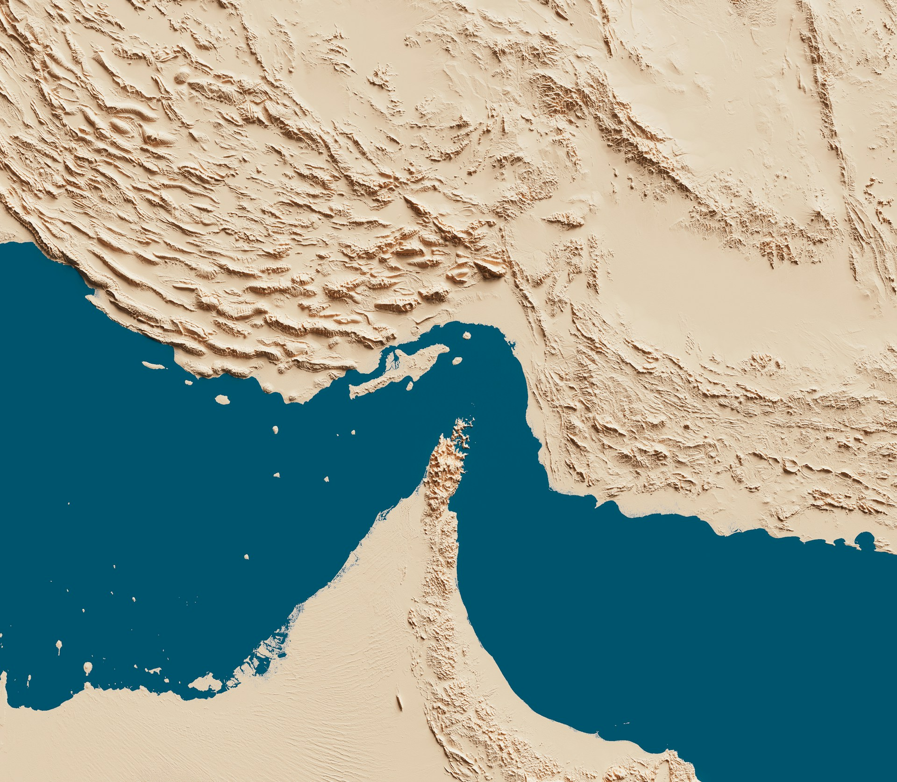

Horacle Academy
Maîtrisez les cycles économiques mondiaux et apprenez à décrypter les signaux des banques centrales pour une compréhension approfondie du monde financier.
Explorer les programmes → Technologie & RechercheCapitalis SaaS
L'infrastructure technologique de notre recherche. Accédez à nos outils propriétaires de screening et de scoring multifactoriel pour une analyse de marché précise.
Rigueur & Indépendance
Horacle Capital est une structure de recherche pure. Nous fournissons des rapports macroéconomiques et des signaux analytiques clairs pour aider à mieux comprendre le monde qui nous entoure.
QUI SOMMES-
NOUS ?
Horacle Capital est une structure de recherche indépendante spécialisée dans l'analyse macroéconomique et la modélisation quantitative des marchés financiers.
Nous publions des rapports hebdomadaires stratégiques et proposons un mentorat privé pour maîtriser les fondamentaux de l'économie mondiale.
Explorez nos Rapports, nos Recherches, ou découvrez Capitalis →
Décryptage des cycles économiques et des politiques monétaires.
Utilisation de modèles statistiques pour filtrer le bruit du marché.
Chaque rapport vise la clarté analytique et la compréhension globale.
Horacle Academy : Masterclass Macroéconomie
Ne subissez plus le marché, anticipez-le par une analyse fondamentale rigoureuse. Nous formons ceux qui souhaitent faire le pont entre théorie et réalité du terrain.
Framework Macroéconomique
Maîtrise des politiques de Banques Centrales et décryptage des indicateurs (CPI, NFP).
Sessions Privées d'Élite
Un accompagnement sur-mesure pour transformer vos lacunes en avantages compétitifs.


Climat Tendu &
Equities au Top
Revue macro du 20 au 24 avril 2026 : tensions diplomatiques Iran–USA, résistance des marchés actions et lecture des données macroéconomiques clés.

Scoring Report :
Modèle Quantitatif
Présentation détaillée de la méthodologie de notre modèle de scoring quantitatif multifactoriel. Métriques, pondérations et rapport PDF téléchargeable.